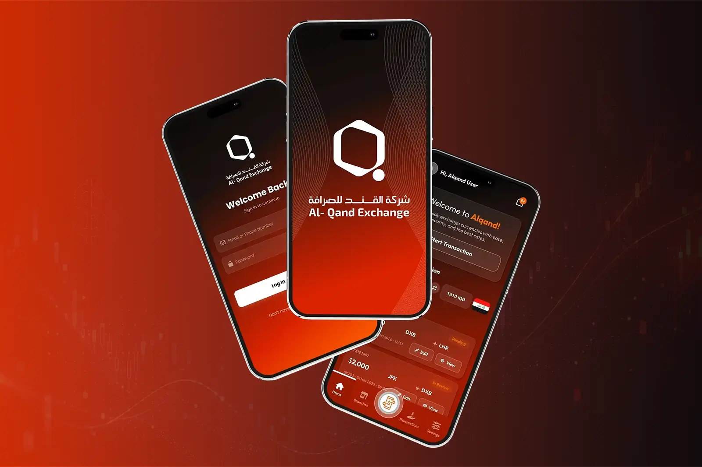
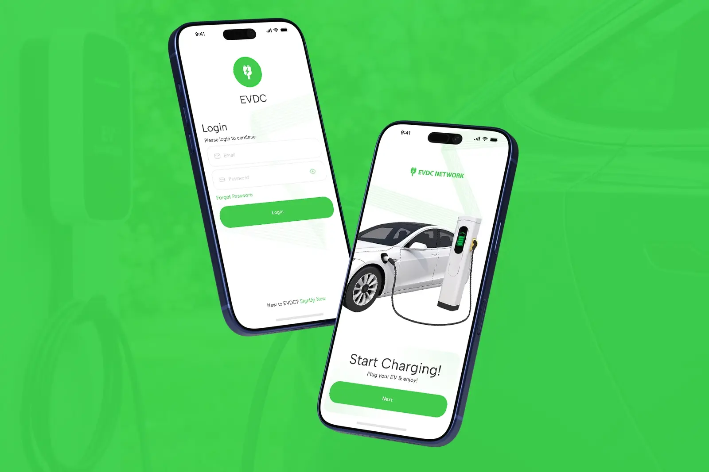
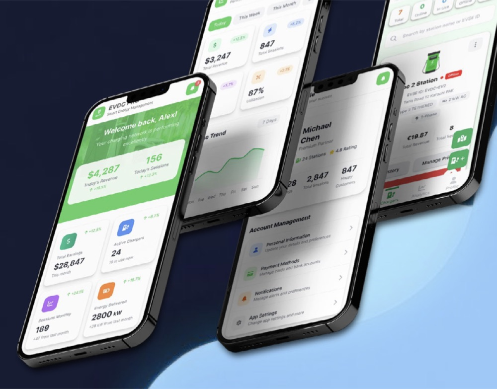

Al-Qand Exchange
EVDC runs a DC fast-charging network. We built the app drivers use to find, start and pay for a charge, and EVDC Earn, the app charger owners use to run their stations and track revenue.

[Quote from the EVDC team on working with Devsynth.]
[Full name], [Job title], EVDC needs written approval
EVDC is an EV DC fast-charging network. Drivers use it to charge on the go, and charger owners connect their stations to the network to earn from them. Most sessions today happen in Italy, with the network live across Europe.
EVDC needed software for two very different groups of people, on top of charging hardware it doesn’t control.
Station locator with real-time availability, one-tap charging, guest accounts and wallet top-up, on iOS and Android.
A separate app for owners: public or private charging modes, real-time analytics and revenue management.
OCPP-compliant, so it works across hardware vendors. Roaming through Hubject and ENAPI over OCPI lets drivers charge on partner networks.
Card payments through Stripe alongside the EVDC crypto token, in the same checkout.
A multilingual assistant that answers driver questions using live charger data. More on it below.
Runs on AWS ECS Fargate. We also worked on bringing AWS costs down as usage grew.
Two calls shaped the product. Ali: confirm or replace these with the real reasoning from the team
Drivers and owners open the app for different reasons and at different moments. Keeping them as separate apps let each one stay simple, and let us ship owner features without touching the driver flow.
Building on OCPP and OCPI, instead of custom links to each charger brand or network, meant new hardware and new roaming partners could be added without rebuilding the app.
The chatbot uses retrieval-augmented generation (RAG) and is connected to live OCPP data, so it can answer questions about a specific charger or session rather than giving generic help. It speaks more than one language, which matters for a network that runs across Europe.
To add when confirmedWhat the bot hands to a human, how we test answers, and one quality number (for example, the share of questions it resolves on its own).

Get the apps: EVDC on iOS, EVDC on Android, EVDC Earn on iOS, EVDC Earn on Android.
Book a 30-minute call with the team that built EVDC. We’ll look at your idea and give you a clear next step.